Try Ubuntu Desktop¶
In this tutorial, you’ll try Ubuntu Desktop 26.04 LTS on your computer without making any permanent changes. Ubuntu Desktop will run from a USB drive and your data will be safe.
What you’ll need:
A laptop or PC.
A flash drive, 8GB or above recommended.
Will Ubuntu work on my computer?¶
You can test Ubuntu from a USB drive on any computer to see if it works.
You can also try to find your computer on the Ubuntu certified hardware page. These devices have been tested and confirmed to work well with Ubuntu.
If you want to run Ubuntu on Apple Silicon hardware, such as recent Macs using M1 CPUs or later, refer instead to the Ubuntu Asahi community project, which isn’t supported by Canonical. The hardware support might be limited and depends on your specific machine. For example, Ubuntu Asahi 25.10 only runs on systems with M1 and M2 CPUs.
You can also install Ubuntu in a virtual machine on top of your current system using Multipass.
For guidance on installing Ubuntu on platforms based on architectures other than x86 (including ARM or RISC-V boards, such as Raspberry Pi), see Ubuntu hardware support documentation.
Download an Ubuntu image¶
Get the Ubuntu installation image from the Download Ubuntu Desktop page. Save it to a memorable location on your PC. The downloaded file is called ubuntu-26.04-desktop-amd64.iso or similar.
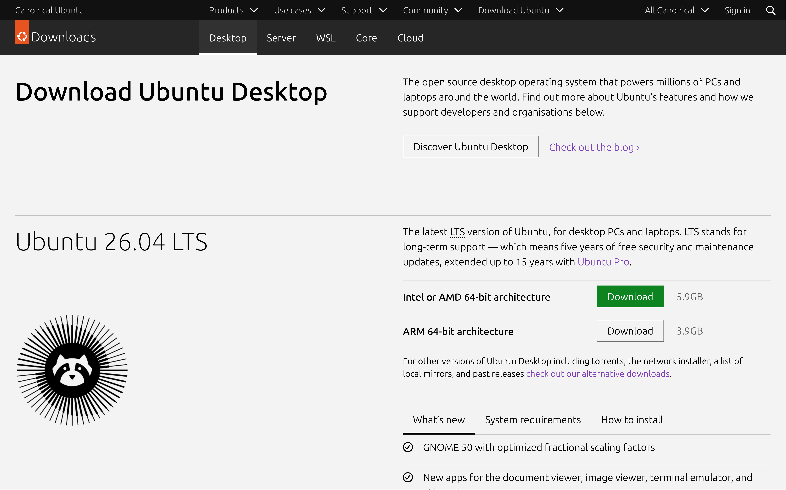
Create a bootable USB stick¶
Write the downloaded Ubuntu image to a USB stick to create the installation media. This is not the same as copying the downloaded image file: you have to use special software.
Warning
This will erase your USB stick. Back up your files first.
The application that we’ll use depends on the system that you’re currently using.
Open the Disks application. You can find it in the applications menu or by searching for “Disks”.
Insert your USB stick. It appears in the sidebar. Select it there.
Warning
Make sure to select the USB stick and not the disk with your running system. Both are listed.

Close all applications that access files or folders on the USB stick, including the file browser.
In the Disks window header, click Drive Options (⋮) and select Restore Disk Image…
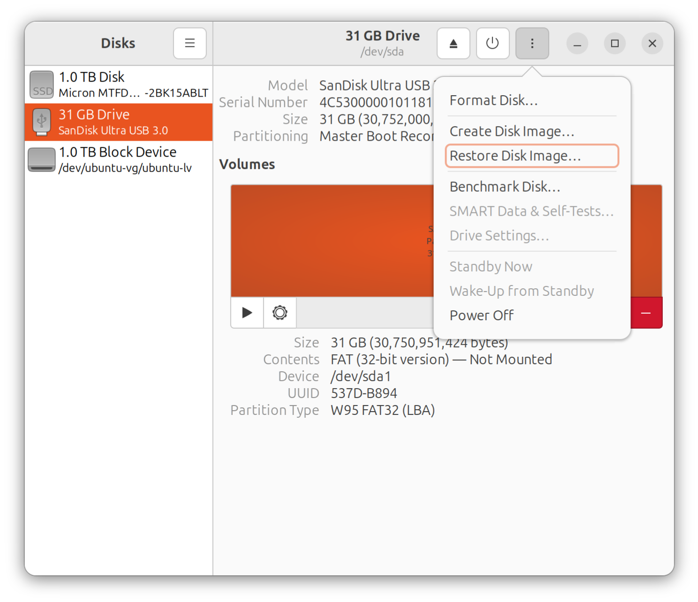
Next to Image to Restore, select the downloaded Ubuntu image file.
Click Start Restoring… and confirm. The application asks for your password.
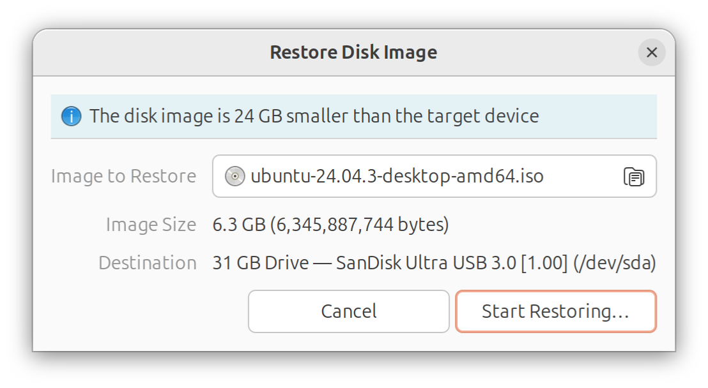
A progress bar appears while Disks is writing the image.

When the progress bar finishes, click Eject this disk (⏏).

Download and install the latest version of Rufus from the rufus.ie website.
If you’re using Windows 7, install version 3.22 of Rufus. On Windows XP or Vista, install version 2.18.
Launch Rufus. If prompted, allow online updates.
Note
Rufus presents many options in its interface. It’s safe to leave most of them with their default values.
Insert your USB stick. It appears in the Device field.
If Device shows the wrong USB device, select the correct one from the drop-down menu.
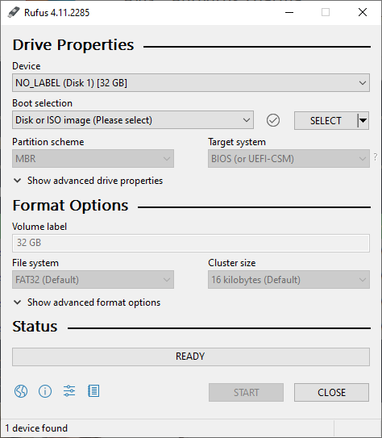
Click SELECT next to Boot selection. Choose the Ubuntu image file that you’ve downloaded and confirm by clicking Open.
If the button reads DOWNLOAD instead, click the dropdown and change it to SELECT first.
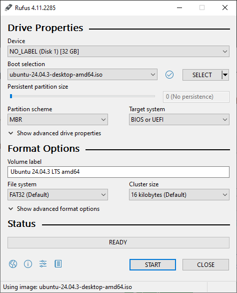
If you’ve already tried Rufus and the USB stick failed to boot on your system, change Partitioning scheme to GPT and check that Target system is set to UEFI (non CSM). This works on modern systems that disable legacy compatibility.
Click START to write the image to USB.
Rufus tells you that the Ubuntu image is an ISOHybrid image. This means that the same image file can be used as the source for both a USB stick and a DVD.
Confirm the Write in ISO Image mode option.
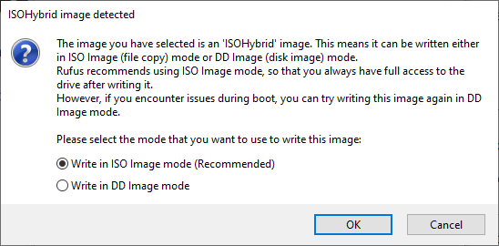
If Rufus asks to download additional files to complete writing the image, select Yes to continue.
Rufus warns you that all data on the USB device is about to be destroyed. Double-check that you’ve selected the correct device and confirm by clicking OK.

Rufus is now writing the image to USB. This usually takes around 10 minutes.
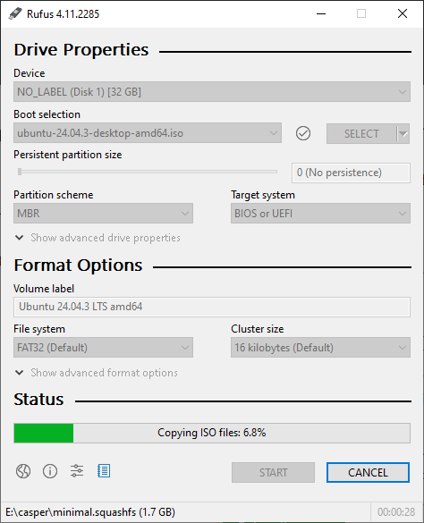
When Rufus has finished writing to the USB device, the Status bar says READY.
Click CLOSE to complete the write process.
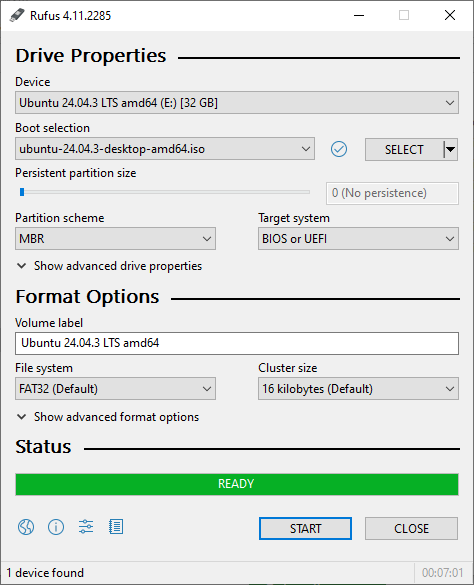
Insert the USB stick.
At the balenaEtcher website, download Etcher for macOS (arm64) if you’re using an Apple Silicon machine, or download Etcher for macOS if you’re using an Intel Mac.
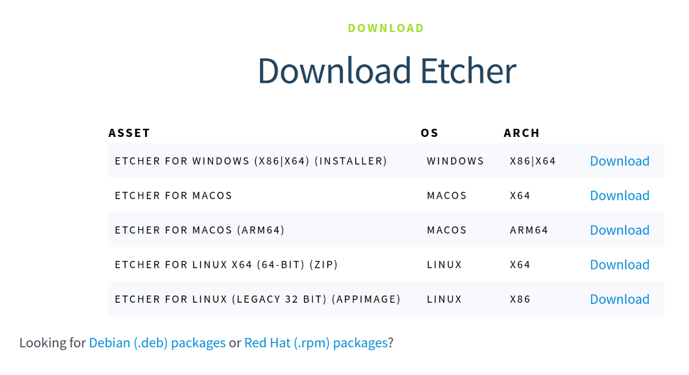
Install and open balenaEtcher.
Click Flash from file and select the downloaded Ubuntu image.
By default, the image file will be in your Downloads folder.
Click Select target and choose your USB stick.
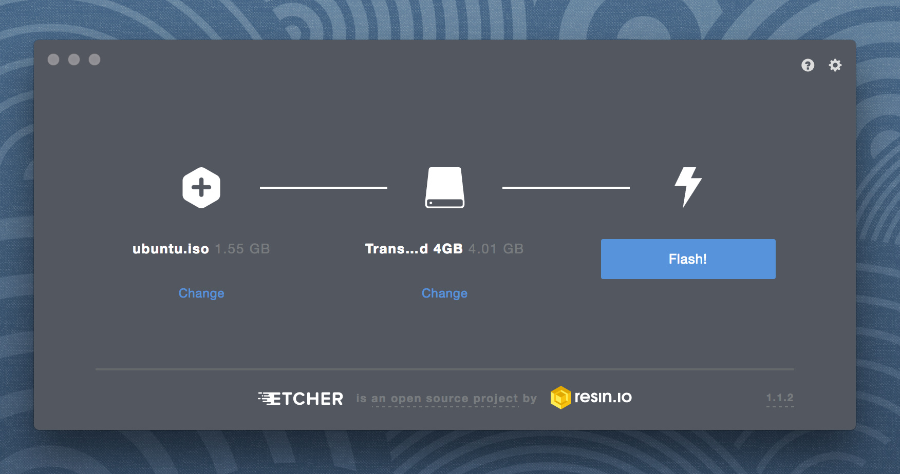
Click Flash! to write the image to USB.
See the exhaustive how-to guide for other platforms and alternative image writers.
Now you have a USB stick that works as Ubuntu installation media.
Boot from the USB flash drive¶
Insert the USB stick into the laptop or PC where you want to install Ubuntu.
Restart the computer.
Your device should recognize the installation media and launch the Ubuntu installer.
If Ubuntu doesn’t launch, restart your computer again. This time, hold a key during startup:
On a PC or Windows computer, F12 is the most common key for bringing up the system boot menu but Escape, F2 and F10 are common alternatives. If unsure, look for a brief message when your system starts: this often informs you which key to press to access the boot menu. You can also find the right key in the documentation for your laptop or PC.
In the boot menu that appears, select your USB device.
To start Ubuntu on Apple hardware, restart or power-on the Mac with the USB stick inserted while you hold the Option or Alt (⌥) key.
This launches the Startup Manager, which shows bootable devices connected to the machine. Your USB stick should appear as gold or yellow and be labeled EFI Boot. Select it to proceed to the standard Ubuntu boot menu.

Follow the installer¶
The Ubuntu Desktop installer opens. We’ll use it to set a couple of options. Then we’ll close it without installing anything on your computer.
Choose your language.
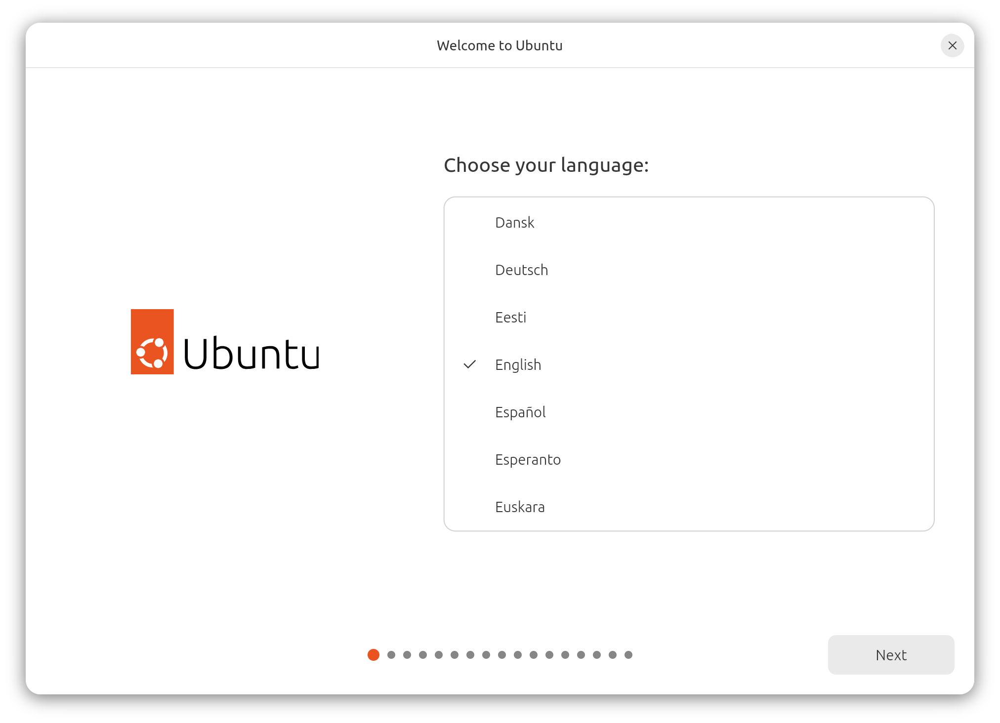
Select any accessibility settings that your require.
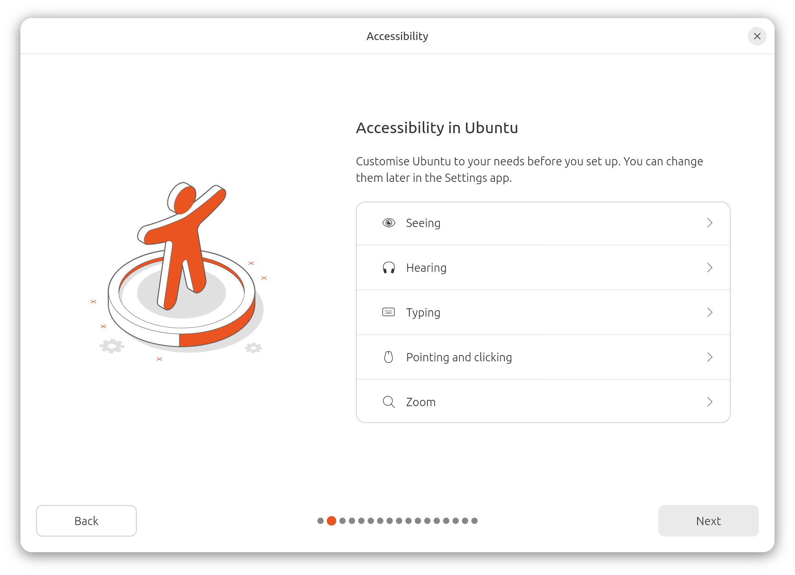
Select your keyboard layout.

Connect to your network.
This allows Ubuntu to download updates and third party drivers, such as NVIDIA graphics drivers, during installation.
It also allows you to use a web browser in the Ubuntu preview.
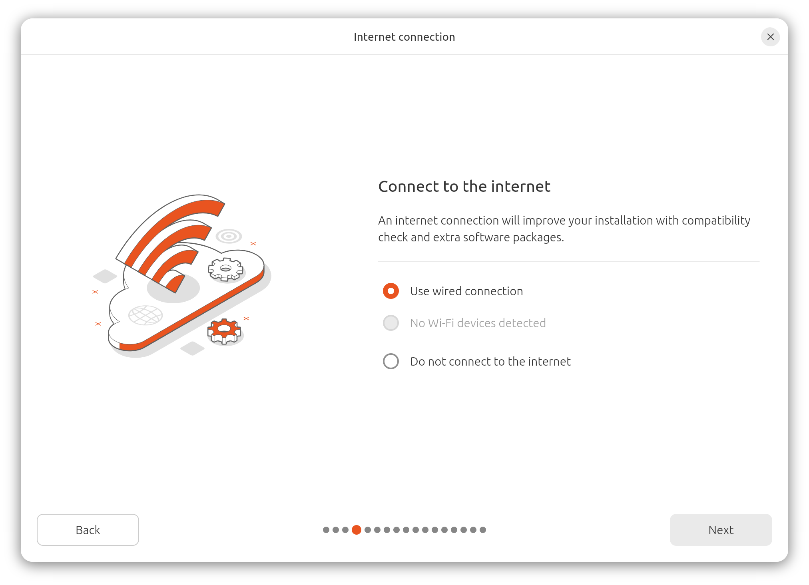
The network connection is optional. If you can’t connect, the Ubuntu preview will still work.
The installer gives you the choice to try or install Ubuntu.
Click Try Ubuntu so that you can preview Ubuntu without making any changes to your PC.
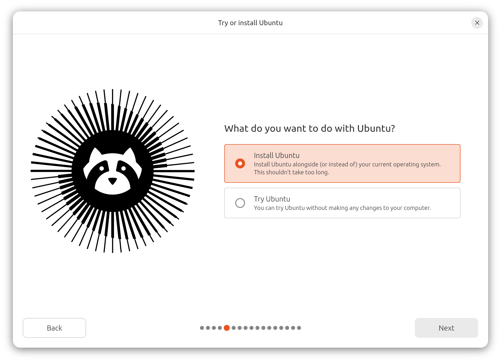
Test the Ubuntu preview¶
The installer closes. Use the preview to test if your hardware works correctly with Ubuntu.
Note that this preview of Ubuntu only uses open-source drivers. If your hardware requires proprietary drivers, such as for NVIDIA graphics cards, they are missing in this environment. You can enable them during the Ubuntu installation or later.
Look around the interface. Try out how Ubuntu is controlled. See what applications are available.
Install Ubuntu or return to your system¶
If you decide to install Ubuntu, return to the installer menu at any time by clicking the Install Ubuntu shortcut on the desktop. See Install Ubuntu Desktop to proceed with the installation. If you have any data on your computer that you want to keep, make sure to back up your data first.
When you’re done testing Ubuntu and you don’t want to install it, you can reboot the computer and return to your regular system:
Click the menu in the upper right corner of the screen on the top bar.
Click the power button.
Select Restart and confirm.
Ubuntu asks you to remove your USB flash drive from the device. Once you’ve done this, press Enter.
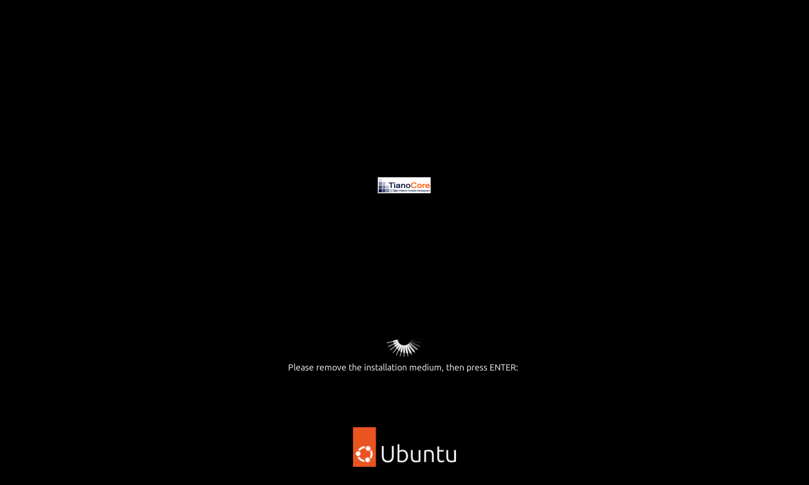
Your computer restarts and loads your regular system.